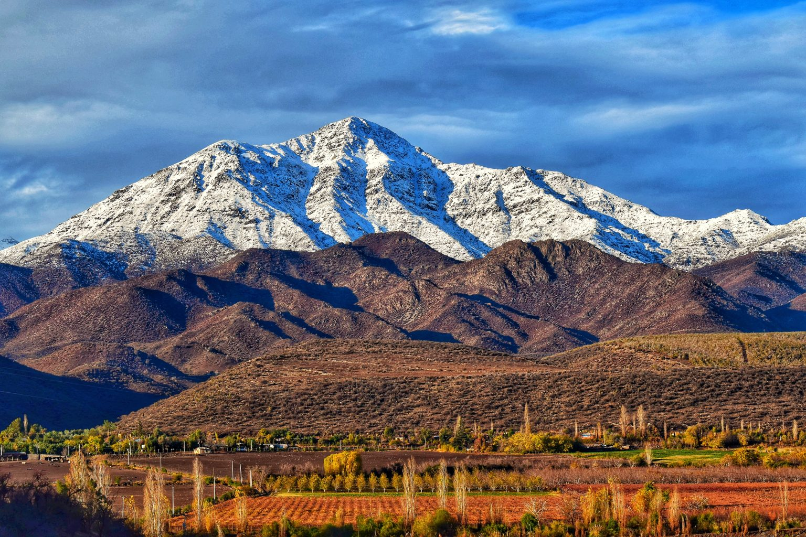
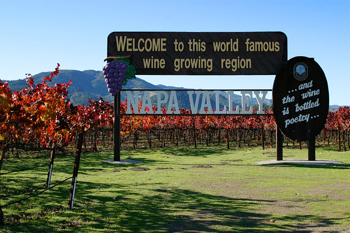
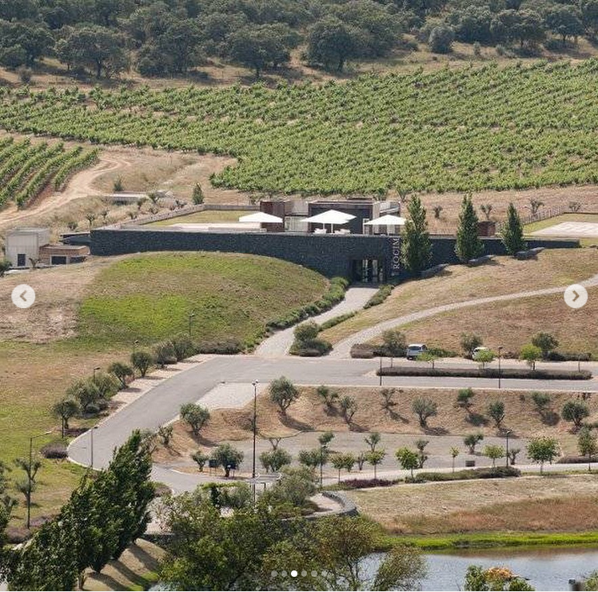
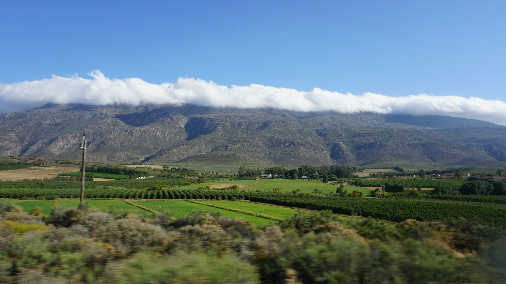
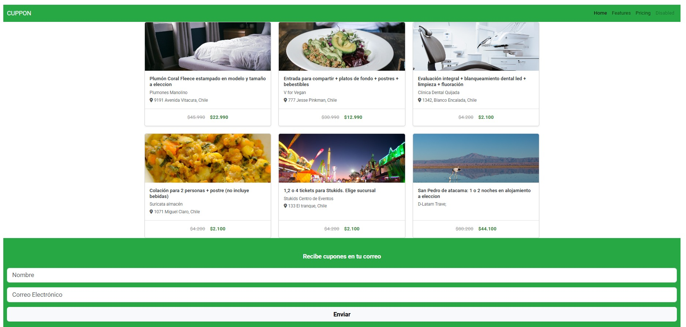
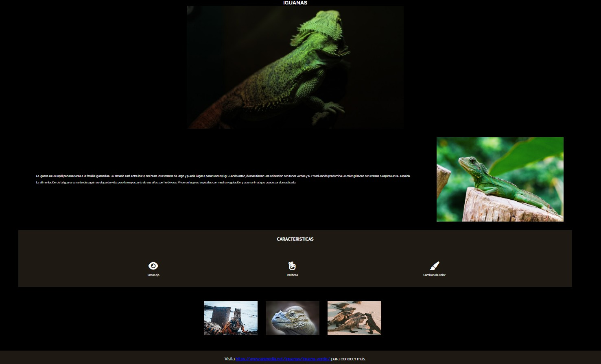

Experiencia

Chile
Asistente de Enólogo
Viñedos Familia Chadwick – Valle del Aconcagua, Chile
2019 – 2020 - 2021
- Ascenso desde asistente de fermentación hasta supervisor nocturno (50 operarios + 8 asistentes).
- Operaciones en bodega blanca: prensado, trasiegos y control de calidad.
- Reporte directo al enólogo jefe y director.
Operario de Bodega
Viña Casa Silva – Chile
Febrero 2018 – Mayo 2018
- Vendimia: inoculaciones, adiciones, remontajes, trasiegos y limpieza de tanques.
- Viñedos Chadwick
- Viña Casa Silva

Australia
Cellar Hand
Josef Chromy Wines – Tasmania, Australia
Febrero 2025 – Junio 2025
- Recepción de uvas, despalillado, prensado y monitoreo de fermentación.
- Tareas de trasiego, remontajes, correcciones y manejo de barricas.
- Mantenimiento de limpieza en equipos y bodega.
- Coordinación con el equipo enológico para cumplir metas de producción y calidad.
Cellar Hand
Ten Minutes By Tractor – Mornington Peninsula, Melbourne, Australia
Febrero 2023 – Abril 2023
- Apoyo integral en bodega boutique especializada en Chardonnay y Pinot Noir de clima frío.
- Trabajo en embotellado, prensado, trasiegos, adiciones, y manejo de barricas.
- Colaboración previa a vendimia con colocación de mallas y muestreo en viñedos.
- 10 Minutes By Tractor wines
- Josef Chromy wines

USA
Cellar Worker (Full-Time)
Brasswood Cellars – St. Helena, California, EE.UU.
Julio 2022 – Diciembre 2022
- Producción de 400 toneladas en bodega custom crush con prestigiosos enólogos.
- Encargado de prensado de tintos, rosados y blancos.
- Operaciones de remontajes, adiciones, trasiegos y embotellado en ambiente de alta demanda.
Cellar Intern
Brasswood Cellars – St. Helena, California, EE.UU.
Febrero 2021 – Abril 2021
- Formación en operaciones de vendimia: prensado, remontajes, adiciones y trasiegos.
- Familiarización con las prácticas enológicas del Valle de Napa.
- Brasswood Cellars

Portugal
Cellar Intern
Herdade do Rocim – Alentejo, Portugal
Junio 2019 – Diciembre 2019
- Especialización en producción de vino en ánforas.
- Recepción de uvas, control de fermentación y embotellado.
- Realización de tareas generales de vendimia: remontajes, trasiegos y limpieza.
- Muestreos en campo para determinar fechas óptimas de cosecha.
- Análisis pre fermentativos en laboratorio: pH, Brix, acidez total.
- Herdade do Rocim

Sudáfrica
Cellar Intern
Bacco Estate – Paarl, Sudáfrica
Febrero 2022 – Abril 2022
- Participación clave en la primera vendimia de la bodega.
- Muestreo en viñedos, análisis en laboratorio y control de fermentaciones.
- Manejo de prensas y soporte en operaciones generales.
- Trabajo con barricas para fermentación y crianza.
- Limpieza profunda y organización de la bodega y equipos.
- Bacco Estate
Estudios
-
Estudios Primarios:
Colegio Inglés San Patricio y SS.CC. -
Estudios Superiores:
Universidad Viña del Mar – Ingenierío Agronomo. -
Registro Profesional:
Enólogo registrado en la Asociación de Ingenieros Agrónomos Enólogos de Chile -
Estudios Actuales:
Estudiante en Desafío Latam – Formación como Desarrollador Web
Portafolio

Proyecto 1
Trabajo en Bootstrap.

Proyecto 2
Trabajo con Flex.
Referencias
-
Nombre: Juanito perez
Cargo: Enologo
Email: juanitoperez@ejemplo.com -
Nombre: Juana de las perez
Cargo: Enologa
Email: Juanadelasperez@ejemplo.com
Contáctame
Para cualquier consulta profesional o colaboración, no dudes en dejar tus datos en el formulario a continuación. Te responderé a la brevedad.